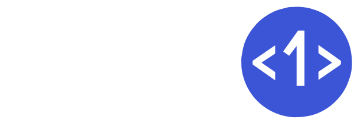
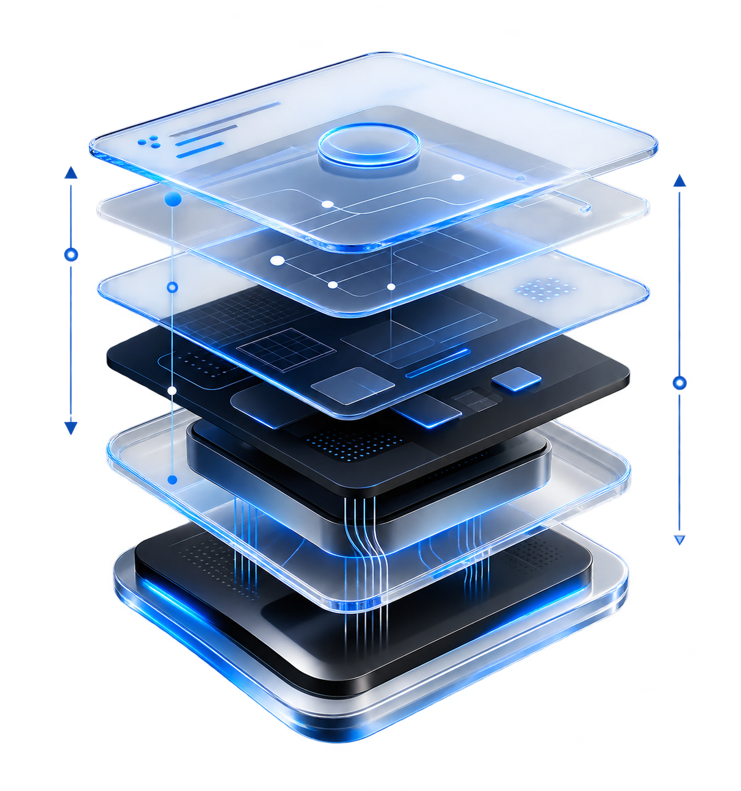

Feita para o Brasil.
Pronta para escalar.
Contexto empresarial e regulatório brasileiro. Arquitetura que acompanha a ambição da sua empresa.

Vamos conversar ↗Conectamos dados, modelos e agentes à sua operação.
Da estratégia ao resultado. Com controle, em escala.
A camada de aplicação
da IA empresarial.
Pilotos isolados. Dados fragmentados. Sistemas desconectados.
O potencial já existe. Falta conectar as peças.
A CISP1 constrói e opera a infraestrutura que transforma modelos, dados e conhecimento em sistemas confiáveis de produção.
OpenAI · Anthropic · Google · Modelos abertos
Contexto. Inteligência. Execução. Governança.
ERP · CRM · Dados · APIs · Sistemas legados

Oito camadas integradas para levar a IA
do experimento à infraestrutura empresarial.
Conecte fontes, estruture conhecimento e entregue contexto rastreável para a IA compreender o seu negócio.
Agentes, pessoas e sistemas trabalhando juntos.
Do entendimento à execução, com memória,
contexto e supervisão humana.
Problemas específicos. Contextos diferentes.
Sistemas de IA conectados ao trabalho real.
A IA só se torna infraestrutura empresarial quando pode ser controlada, auditada e confiada.
Converse sobre a segurança da sua operação ↗Começamos pelo impacto empresarial.
E seguimos com você depois do lançamento.
Estratégia, produto, engenharia e infraestrutura.
A capacidade completa para construir e operar IA.
Contexto empresarial e regulatório brasileiro. Arquitetura que acompanha a ambição da sua empresa.
 01
01Processos, usuários e resultados orientam cada decisão de tecnologia.
 02
02Modelos, nuvens e infraestrutura escolhidos por cenário. Sem dependência de um único provedor.
 03
03Segurança, escala, observabilidade e governança desde a arquitetura.
 04
04Medição, correção e evolução contínuas após o lançamento.
Conversão, personalização
e novos serviços.
Menos trabalho manual.
Mais capacidade de resposta.
Rastreabilidade, consistência
e controle de risco e custo.
Seu próximo passo começa com um caso de uso.